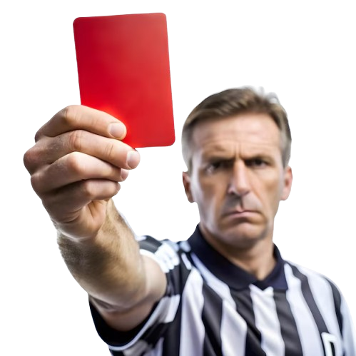

Las tarjetas roja y amarilla son elementos fundamentales en el sistema disciplinario del fútbol, diseñadas para garantizar que el juego sea justo, seguro y honesto. Estas tarjetas, introducidas oficialmente en la Copa del Mundo de 1970, ofrecen un método universalmente entendible para comunicar sanciones a jugadores, entrenadores y espectadores, independientemente del idioma o la cultura. Su uso está regulado por las Reglas de Juego de la FIFA, y su implementación ha sido clave para mantener la integridad y el orden en el deporte.
La tarjeta amarilla es una advertencia formal para un jugador por comportamiento antideportivo, infracciones graves, o incumplimientos específicos de las reglas. Ejemplos de acciones que pueden conducir a una tarjeta amarilla incluyen:
- Simular una falta para engañar al árbitro.
- Retrasar la reanudación del juego deliberadamente.
- Entrar o salir del terreno de juego sin permiso del árbitro.
- Protestar de manera excesiva una decisión del árbitro.
- Cometer faltas reiteradas.
Una tarjeta roja es una sanción en deportes como el fútbol que implica la expulsión inmediata de un jugador del partido. Esto significa que el jugador debe abandonar el terreno de juego y su equipo continúa jugando con un jugador menos, lo que puede afectar significativamente la estrategia y el desempeño del equipo. Ejemplos de acciones que pueden conducir a una tarjeta roja incluyen:
- Una entrada agresiva que pone en peligro la integridad física de un oponente.
- Insultar gravemente al árbitro o provocar una pelea en el campo.
- Tocar el balón con la mano deliberadamente en la línea de gol.
- Cometer una falta como último defensor.
- Si un jugador recibe dos tarjetas amarillas en un mismo partido